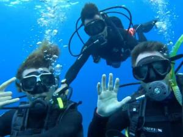
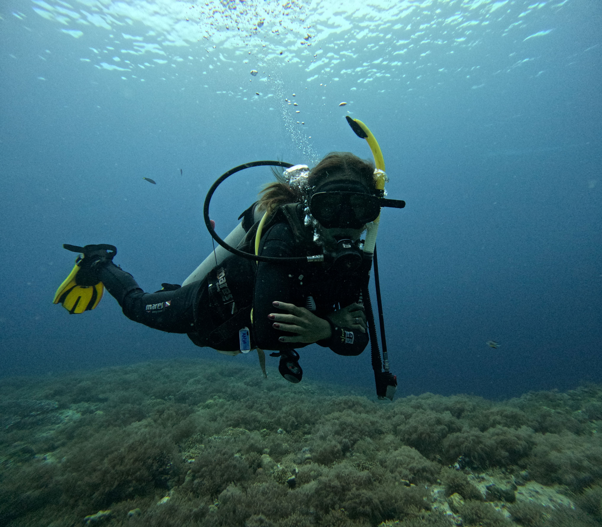
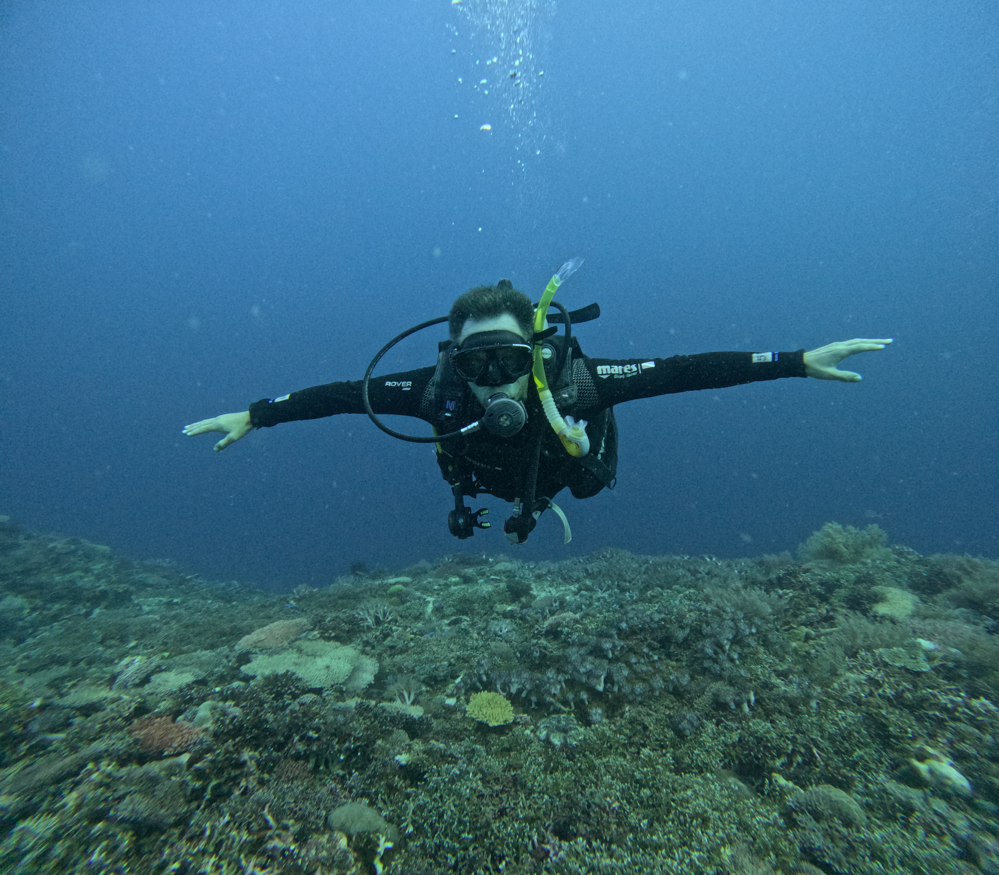

Once an Island Girl: My Mesmerizing Journey to Malapascua Island

As an island girl at heart, my journey to Malapascua Island was nothing short of magical. From the moment I set foot on its pristine shores, I was captivated by the island's natural beauty. The crystal-clear waters gently lapping against the white sandy beaches were a sight to behold. I spent countless hours swimming and snorkeling, marveling at the vibrant marine life just beneath the surface.
My adventure didn't stop at the shoreline. I took the plunge into the deeper waters with free diving and scuba diving. The underwater world of Malapascua is a mesmerizing realm of colorful corals and diverse marine species. Each dive revealed new wonders, from playful schools of fish to the majestic thresher sharks that the island is famous for. The experience was both exhilarating and humbling, leaving me in awe of the ocean's beauty.
Island hopping around Malapascua offered a different perspective of its stunning landscapes. Each island we visited had its unique charm, from secluded beaches to lush greenery. The views were breathtaking, and I felt a sense of wonder and adventure with every new destination. These excursions allowed me to appreciate the diverse beauty of the region and created memories that will last a lifetime.
During my stay, I was fortunate to experience the local culture firsthand. The island's fiesta celebrations were a highlight, with weekly discos leading up to the main event. The vibrant music, lively dancing, and joyful atmosphere were infectious. I found myself immersed in the festivities, connecting with locals and fellow travelers alike. The sense of community and celebration was truly heartwarming.
One of my favorite moments on Malapascua was simply sitting by the shore, watching the horizon where the sky meets the crystalline waters. It was a peaceful and reflective time, allowing me to unwind and appreciate the island's serene beauty. The tranquil environment provided a perfect escape from the hustle and bustle of everyday life.
Evenings on Malapascua were filled with delightful experiences. Whether it was enjoying a drink by the beach, savoring a delicious dinner, or listening to live music from local bands, each night was a celebration of life. The energy and camaraderie of these gatherings were invigorating, creating wonderful memories that I will cherish forever.
The island's market was a culinary paradise, offering a wide array of food choices from fresh seafood to savory meats and vibrant vegetables. Dining at the market was a sensory delight, with the aroma of grilled dishes filling the air and the sight of colorful produce on display. It was also a melting pot of cultures, with travelers from around the world coming together to enjoy the local cuisine.
My time on Malapascua Island was an unforgettable journey of discovery, adventure, and connection. From the stunning underwater world to the vibrant local culture, every moment was filled with wonder and joy. As an island girl, I found a piece of paradise on Malapascua, and it will always hold a special place in my heart. If you're seeking a destination that offers both natural beauty and rich cultural experiences, Malapascua Island is the perfect choice.
A Journey to Malapascua Island: An Unforgettable Adventure

Malapascua Island, a hidden gem nestled in the heart of the Philippines, offers a myriad of unforgettable experiences for the adventurous soul. Our journey began with a public boat ride to this tropical paradise, where we had the chance to meet fellow travelers from around the world. The anticipation and excitement grew as we shared stories and tips, creating connections that would enhance our island escapade.
Upon arrival, the warm welcome from the friendly locals set the tone for our entire stay. Their hospitality was unmatched, and they eagerly offered suggestions for scuba diving, island hopping, and snorkeling adventures. We chose a cozy resort that provided an array of amenities, including the luxurious option of having a masseur visit our room for a relaxing massage after a day of exploration.
One of the highlights of our trip was the island hopping excursion. The crystal-clear waters surrounding Malapascua are teeming with marine life, and we were fortunate to witness baby sharks and an astonishing variety of sea creatures while snorkeling. The underwater world left us in awe, with its vibrant coral reefs and stunning rock formations.
I couldn't resist the allure of discovering scuba diving. The experience was nothing short of magical as I descended into the depths, surrounded by a kaleidoscope of colors from the tiniest to the most massive marine species. The intricate coral structures and mesmerizing underwater landscapes were breathtaking, creating memories that will last a lifetime.
Malapascua's local market offered a culinary delight, with an array of dishes and barbecues available at incredibly affordable prices. Each meal was a feast for the senses, showcasing the rich flavors and culture of the Philippines.
As our trip came to an end, I found myself longing to return to Malapascua Island. Its natural beauty, welcoming community, and endless adventures made it a truly extraordinary destination. I look forward to the day I can revisit this island paradise and create even more unforgettable memories.
An Australian's Adventure in Malapascua: From Overwhelmed to Awestruck

Having never set foot in the Philippines before, an Australian traveler arrived in the bustling heart of Cebu City and immediately felt overwhelmed by the sea of locals and the noticeable lack of tourists. Despite the initial culture shock, this adventure quickly turned into a deeply enjoyable journey, exploring some of the country's most famous tourist hotspots.
The adventure started with trips to Malapascua Island offering unique experiences. Traveling to this island often meant hopping into cramped mini-vans, a cheap but crowded way to get around. While the journey was affordable, it was long and trafficked, making private car hire a more expensive but far more comfortable and enjoyable option.
The beaches in Malapascua are nothing short of spectacular, with crystal-clear waters and pristine sands. However, it's wise to be cautious when exploring lesser-known beaches, as some may be littered with glass. Seafood lovers will be in heaven with the abundance of fresh catches, but vegetarians and vegans should be careful to specify their preferences, as vegetarian dishes often come with unexpected meat additions.
Thankfully, most Filipinos speak fairly good English, making communication easy in more developed areas. In remote areas, however, travelers may occasionally encounter locals who don't speak English fluently, adding a layer of adventure to the experience.
For confident riders, renting a scooter is one of the best ways to explore the island without breaking the bank, or even just have a walk around. The freedom of riding through the islands allows for a more personal exploration of the stunning landscapes. And, of course, no trip to Malapascua is complete without experiencing its breathtaking underwater world. Snorkeling, free diving, and scuba diving are all must-try activities, with plenty of schools offering lessons, most specifically scuba diving.
In the end, Malapascua proved to be more than just a destination. It was an adventure full of surprises, beauty, and unforgettable memories for this Aussie traveler.